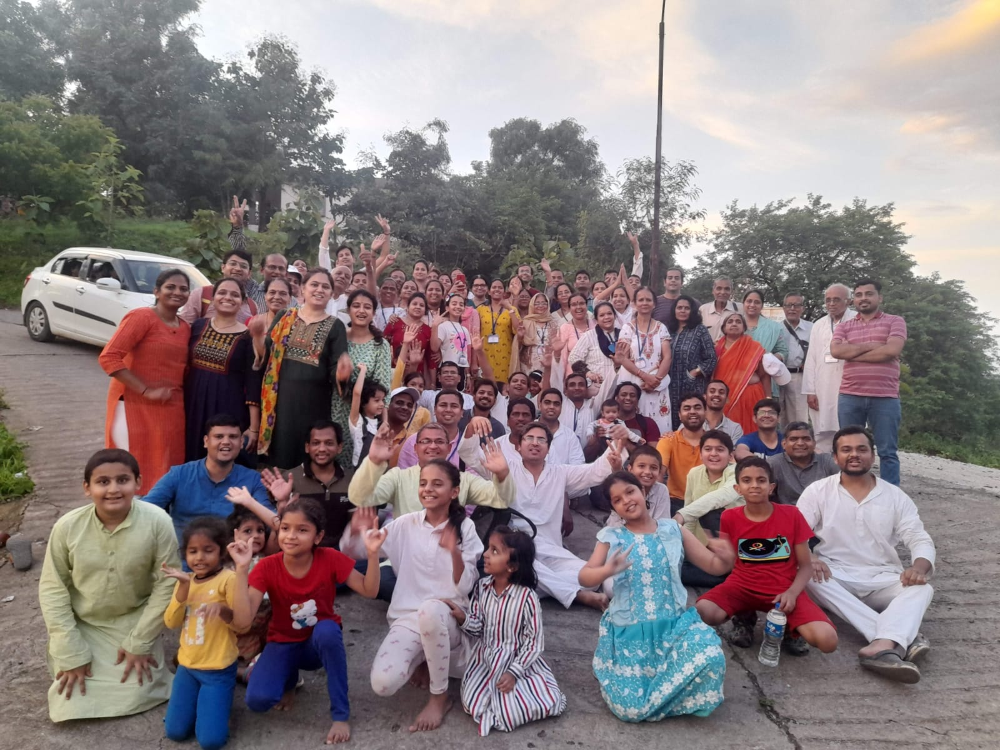
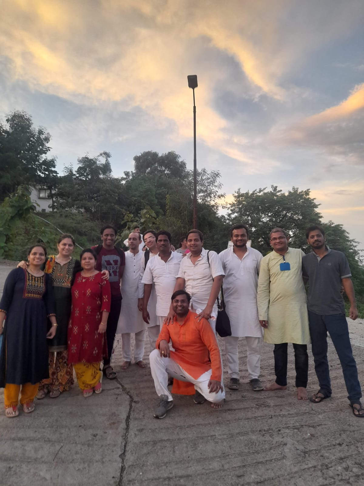
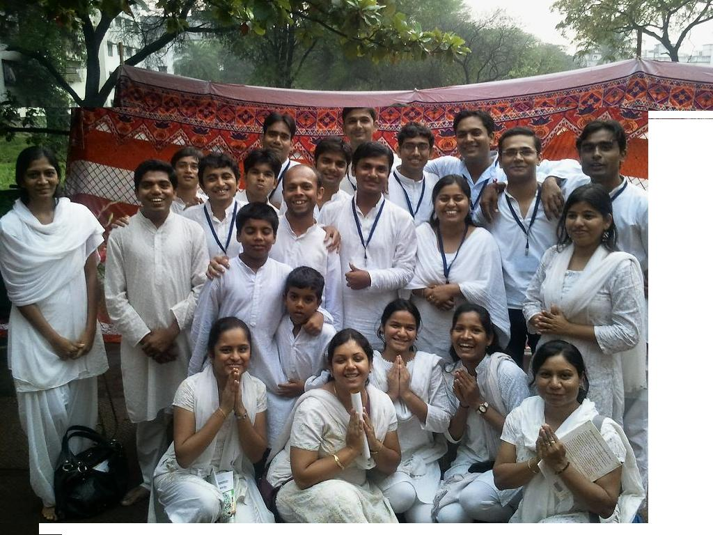
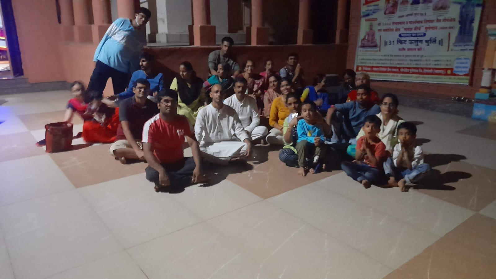
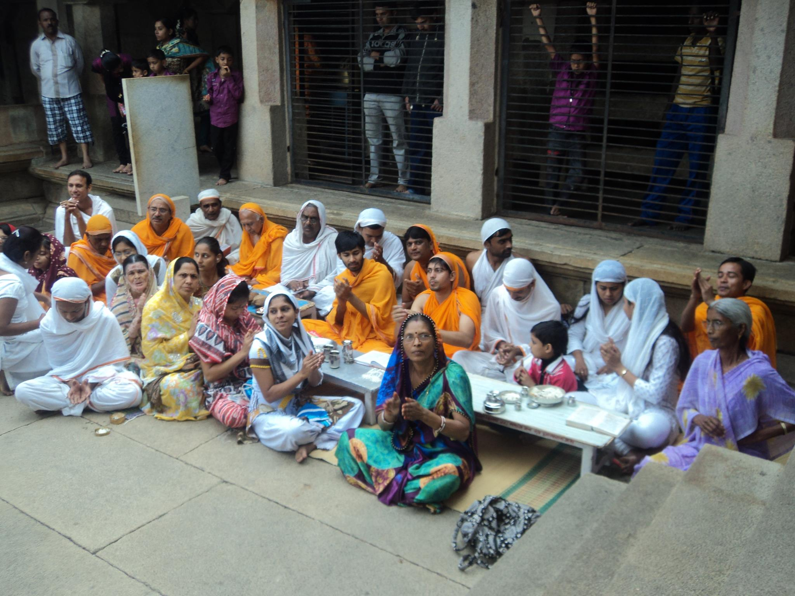
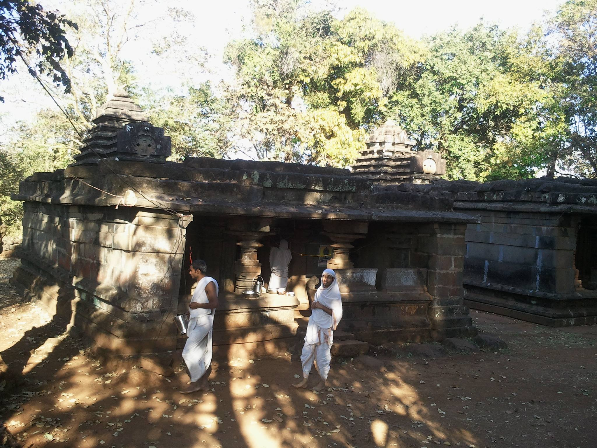
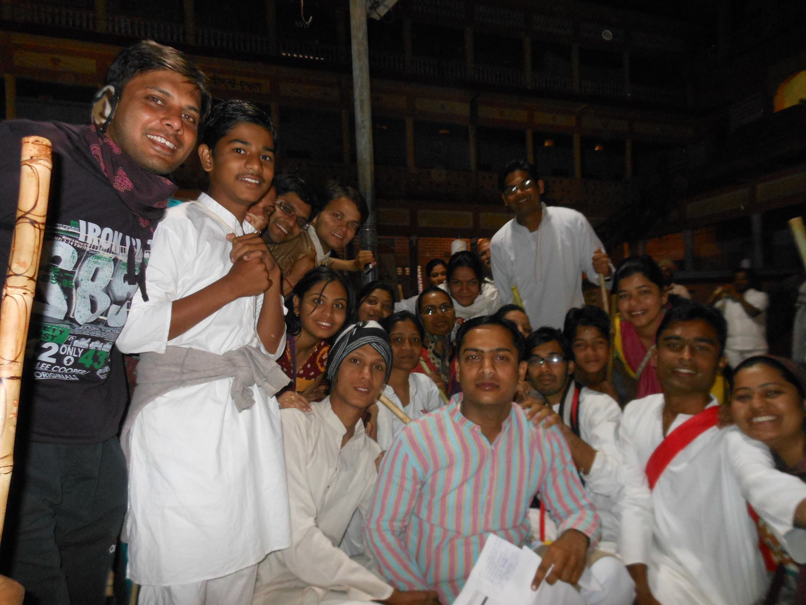
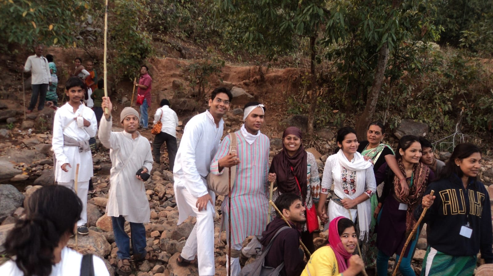
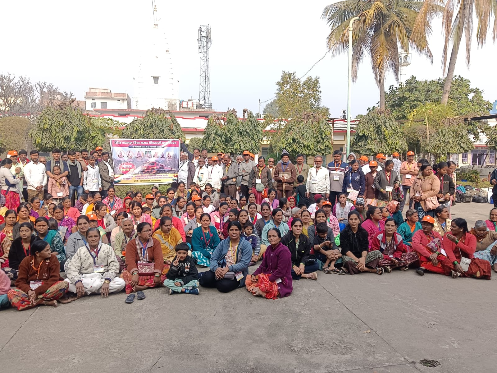

तीर्थ यात्रा
जैन संघ पुणे गत कई वर्षों से सामूहिक तीर्थ यात्राओं का सफल आयोजन कर रहा है। इन यात्राओं का मुख्य उद्देश्य जिन धर्म प्रभावना, जैन तीर्थों के प्रति जागरूकता का विकास, मुनि दर्शन एवं आहार-विहार लाभ और सामूहिक पुण्य अर्जन करना है।
इन पवित्र यात्राओं के माध्यम से, श्रावक अपनी आस्था को सुदृढ़ करते हैं, धर्म के प्रति जुड़ाव महसूस करते हैं और साथ ही समाज में पारस्परिक वात्सल्य भाव और संगठन को बढ़ावा मिलता है।
हमारा प्रभाव (Our Impact)
योजना की मुख्य विशेषताएं (Key Features)









आयोजित की गई प्रमुख यात्राएं (Major Pilgrimages Completed)
जैन संघ पुणे द्वारा अब तक देश के कोने-कोने में स्थित पवित्र जैन सिद्धक्षेत्रों एवं अतिशय क्षेत्रों की यात्राएं आयोजित की जा चुकी हैं:
- तीर्थराज सम्मेद शिखर जी: 7 भव्य यात्राएं (जिसमें गत 3 वर्षों से प्रति वर्ष महाराष्ट्र के 250 तीर्थ यात्री सम्मिलित हो रहे हैं)
- अष्टापद तीर्थ क्षेत्र: 108 यात्रियों का दल
- श्री गिरनार जी (नेमिनाथ भगवान मोक्षस्थली): 3 सफल यात्राएं
- अंतरिक्ष पार्श्वनाथ: 10 से अधिक यात्राएं
- तमिलनाडु क्षेत्र: 2 विशेष यात्राएं
- कर्नाटक क्षेत्र: 3 विशेष यात्राएं
"तीर्थ वंदना से आत्मा निर्मल होती है और धर्म के प्रति अनुराग प्रगाढ़ होता है।"